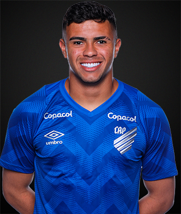
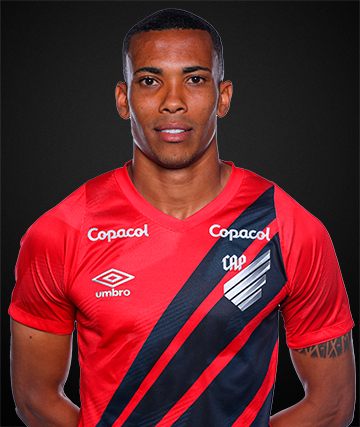
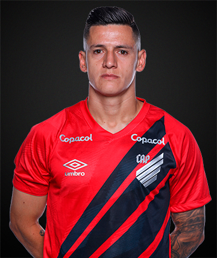
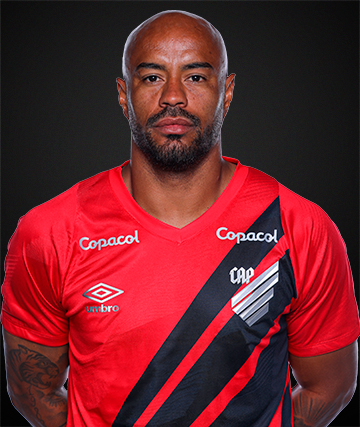
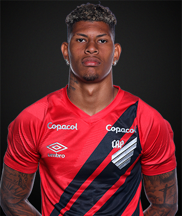
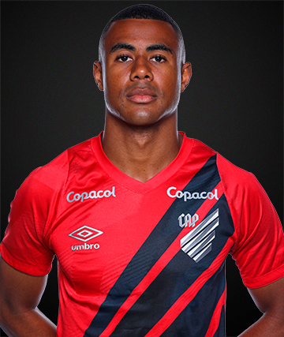
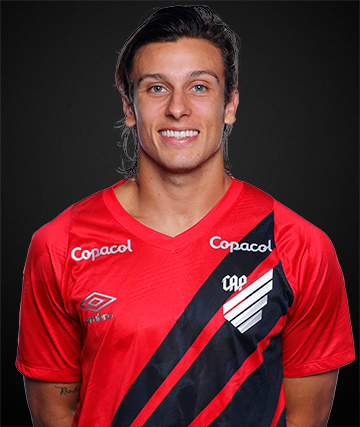
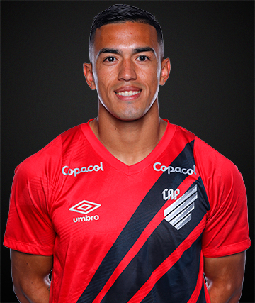
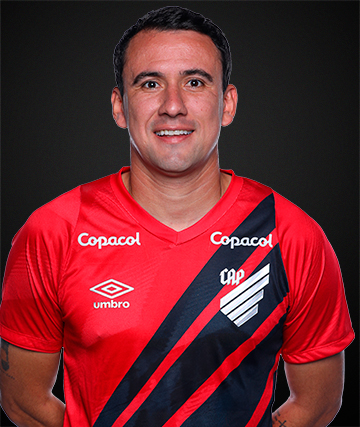

Clube Athletico Paranaense
O Clube Atlético Paranaense surgiu da união de duas agremiações: o International e o América. A fusão foi concluída em 26 de março de 1924. O primeiro título da equipe já veio no ano seguinte: o Paranaense de 1925. Foi o primeiro de 21 troféus estaduais do Atlético - mais um Supercampeonato, em 2002.
O principal título da história do clube foi o Campeonato Brasileiro de 2001, conquistado diante do São Caetano, com boas atuações do atacante Alex Mineiro. O time rubro-negro tem uma das melhores estruturas de trabalho do País, com o Estádio Arena da Baixada e o CT do Caju, e é o único clube do Estado a ter alcançado uma final de Copa Libertadores, em 2005.
Veja agora alguns jogadores do elenco do CAP


Mycael

Fernando

Léo Godoy

Thiago Helano

Marcos Victor

Erick

Bruno Zapelli

Canobbio

Cuello

Pablo